Transformation
Why Study Transformation?
变换在 CG 中有着丰富的应用：
-
模型(modeling)变换
-
平移（同一座模型建筑内，摄像机在不断移动）

-
旋转（模型机器人跳舞）
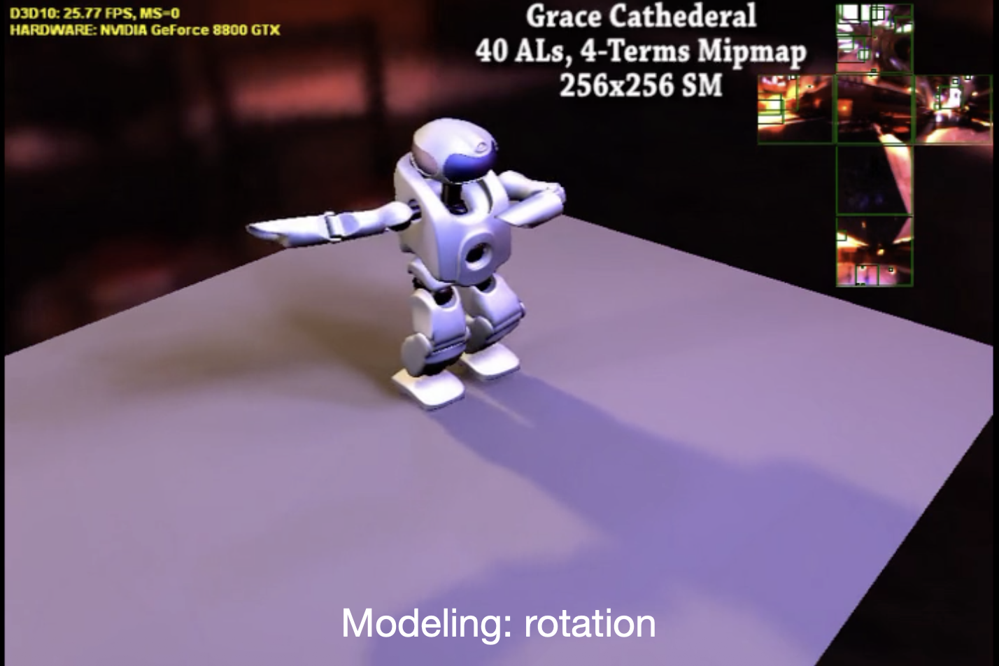
-
缩放（皮克斯电影开头的小台灯会在字母 I 上面弹跳，不断压缩字母直至压扁）
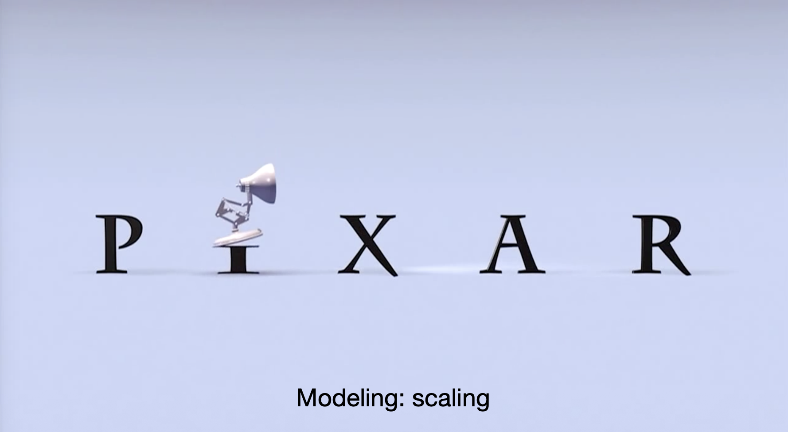
-
-
视图(viewing)变换
-
投影（3D -> 2D）
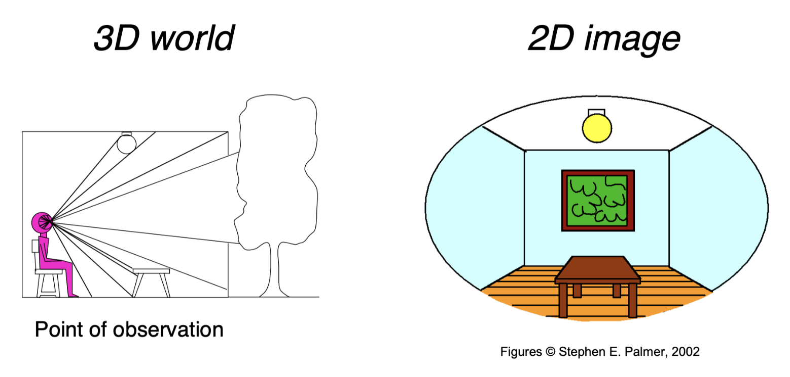
-
2D Transformations
Scaling
将 2D 图形的宽高缩小至原来的一半：
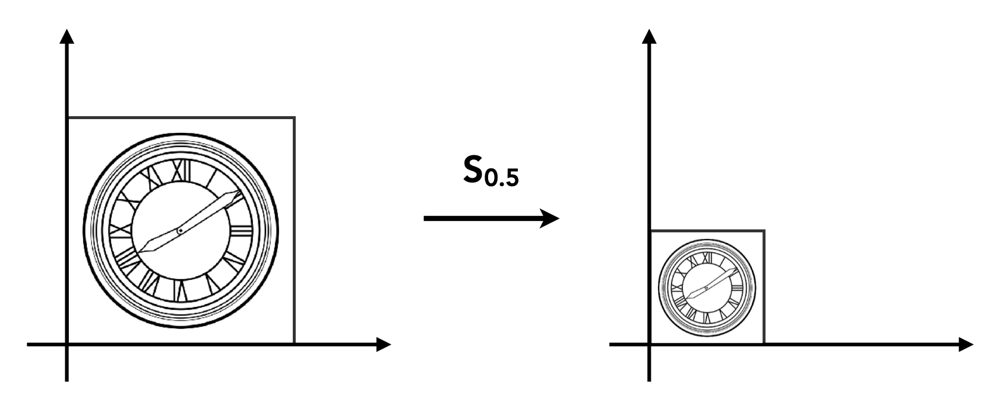
现在图形上的坐标为：\(\begin{cases}x' = sx \\ y' = sy\end{cases}\)。我们可将这一缩放(scaling)变换表示成矩阵-向量乘法：
宽高的缩放可以是不同的，所以更一般的形式如下：
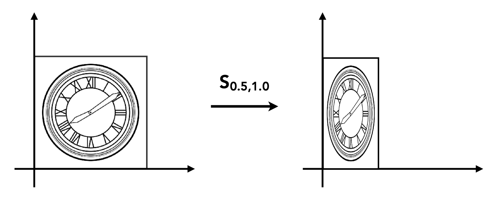
Reflection

以水平反射为例，变换后的图形 \(y\) 坐标不变，\(x\) 坐标为原来的相反数。因此这一变换可被表示为以下矩阵-向量乘法形式：
Shear

剪切(shear)变换仅改变其中一个坐标（这里是改变 \(x\) 坐标）。对于图中所示变换，假设原图左上角的点（坐标为(0, 1)）经过变换后来到(1, a)。对于四边形左边的点，它的 \(y\) 坐标不变，\(x\) 坐标向右移动了 \(a \cdot y\)，因此 \(x' = x + ay\)。我们仍然可以用矩阵-向量乘法表示这一变换：
Rotation
注意
- 任何图形均围绕原点(0, 0)旋转
- 默认旋转方向为逆时针(CCW, counterclockwise)
图形旋转 45°：
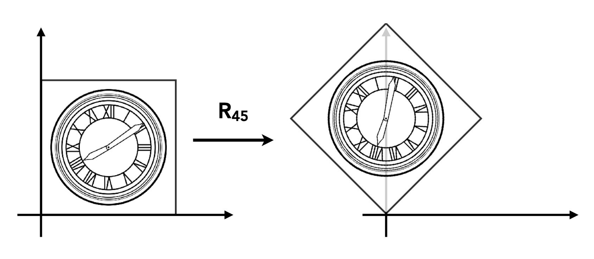
旋转矩阵 \(R_\theta = \begin{bmatrix}\textcolor{cornflowerblue}{\cos \theta} & \textcolor{yellow}{- \sin \theta} \\ \textcolor{cornflowerblue}{\sin \theta} & \textcolor{yellow}{\cos \theta}\end{bmatrix}\)。下面给出推导过程：
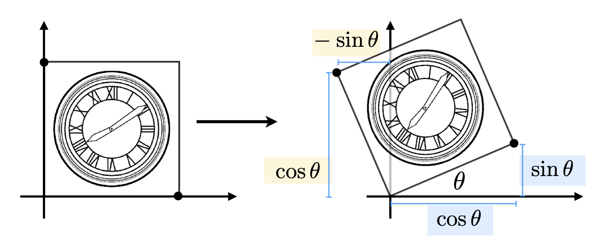
- 假设原图形（左图）边长为1，旋转矩阵 \(R_\theta\) 的4个元素均为未知数，即 \(R_\theta = \begin{bmatrix}A & B \\ C & D\end{bmatrix}\)
-
考虑原图右下角的点 \((1, 0)\)，经旋转后来到了 \((\cos \theta, \sin \theta)\)，所以通过 \(\begin{bmatrix}\cos \theta \\ \sin \theta\end{bmatrix} = \begin{bmatrix}A & B \\ C & D\end{bmatrix} \begin{bmatrix}1 \\ 0\end{bmatrix}\) 可列出方程：
\[ \begin{align*} A \cdot 1 + B \cdot 0 & = \cos \theta \\ C \cdot 1 + D \cdot 0 & = \sin \theta \end{align*} \]解得 \(A = \cos \theta, C = \sin \theta\)。
-
再用左上角的点得到另外两个方程，同理解得 \(B = -\sin \theta, D = \cos \theta\)
当旋转角 = \(-\theta\) 时，\(R_{-\theta} = \begin{bmatrix}\cos \theta & \sin \theta \\ -\sin \theta & \cos \theta\end{bmatrix} = R_\theta^T\)，即旋转角为 \(\theta\) 时旋转矩阵的转置。事实上根据定义，\(R_{-\theta} = R_\theta^{-1}\)，所以旋转矩阵满足：\(R_\theta^T = R_\theta^{-1}\)，因此旋转矩阵是一种正交矩阵(orthogonal matrix)，之后会用到这个性质。
Linear Transform
我们称以下变换为线性变换。满足的特征是：线性变换后的坐标均为关于原坐标的线性函数。
上述变换的矩阵-乘法形式为：
即 \(\bm{x}' = M \bm{x}\)。
Homogeneous Coordinates
Translation

还有一种叫做平移(translation)的简单变换，方程为：\(\begin{cases}x' = x + t_x \\ y' = y + t_y\end{cases}\)
如果考虑平移变换的话，那么变换的公式不能直接写成矩阵-向量乘法，而是以下形式：
因此平移变换不属于线性变换。但我们不希望将平移看成一种特殊情况。那么是否有一种统一的方法来表示所有的变换呢？有的，这个方法就是齐次坐标(homogeneous coordinates)。
Homogeneous Coordinates
齐次坐标的做法是在原来坐标的基础上添加第三个坐标（即 w 坐标）
- 2D 点 = \(\begin{pmatrix}x & y & \textcolor{yellow}{1}\end{pmatrix}^T\)
- 2D 向量 = \(\begin{pmatrix}x & y & \textcolor{yellow}{0}\end{pmatrix}^T\)
现在平移变换可以直接用矩阵-向量乘法表示了：
前面规定点和向量的第三个元素分别为0和1是有道理的——该元素可以确定运算的合法性：
- 向量(0) + 向量(0) = 向量(0)
- 点(1) - 点(1) = 向量(0)
- 点(1) + 向量(0) = 点(1)
- 点(1) + 点(1) = 什么也不是！
在齐次坐标系下，任意 \(w \ne 0\) 的向量 \(\begin{pmatrix}x \\ y \\ w\end{pmatrix}\) 对应 2D 点 \(\begin{pmatrix}x / w \\ y / w \\ 1\end{pmatrix}\)。
Affine Transformations
仿射(affine)变换 = 线性变换 + 平移
使用齐次坐标后可表示为：
总结：2D 变换
-
缩放
\[ \mathbf{S}(s_x, s_y) = \begin{pmatrix}s_x & 0 & 0 \\ 0 & s_y & 0 \\ 0 & 0 & 1\end{pmatrix} \] -
旋转
\[ \mathbf{R}(\alpha) = \begin{pmatrix}\cos \alpha & - \sin \alpha & 0 \\ \sin \alpha & \cos \alpha & 0 \\ 0 & 0 & 1\end{pmatrix} \] -
平移
\[ \mathbf{T}(t_x, t_y) = \begin{pmatrix}1 & 0 & t_x \\ 0 & 1 & t_y \\ 0 & 0 & 1\end{pmatrix} \]
Inverse Transform
矩阵 \(M^{-1}\) 就是变换矩阵 \(M\) 的逆变换(inverse transform)。

Composing Transformations
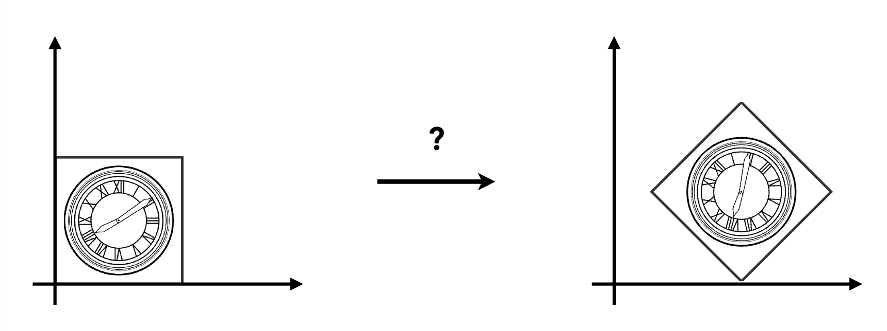
上图所示的变换可无法用前面介绍过的任何一个单独的变换表述，所以这是一种复合变换(composite transform)。不难发现，该变换既包括平移，也包括旋转。
-
假如先平移后旋转，无论如何都达不到图中所示的结果

-
假如先旋转后平移，发现可以达到上图的结果
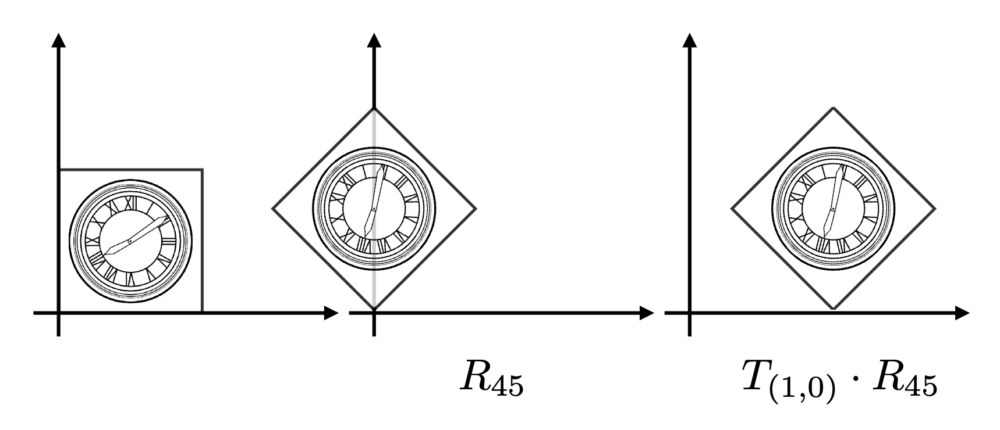
这给我们带来的启示是：变换的顺序很重要！从数学上来说，这是因为矩阵乘法不具备交换律，因此 \(R_{45} \cdot T_{(1, 0)} \ne T_{(1, 0)} \cdot R_{45}\)，因此不同的变换顺序会带来不同的结果。
另外值得一提的是，表示变换的矩阵的应用顺序为自右向左（也就是越靠近向量的矩阵越先被作用）。
对于一个仿射变换序列 \(A_1, A_2, A_3, \dots\)，可以用矩阵乘法将它们组合起来（涉及到矩阵乘法的结合律），最后再做矩阵-向量乘法，这对于计算性能的提升非常重要。
Decomposing Complex Transforms
反过来看变换的组合，就是分解复杂的变换。
例子
如何让图形围绕某个给定的点 \(c\) 旋转？
- 将点 \(c\) 平移到原点位置上
- 旋转
- 再将点 \(c\) 平移到原来的位置上

用矩阵表示为：
3D Transformations
3D 变换和 2D 变换没有很大的区别。前面介绍的一些概念很多都适用于 3D 变换。
- 使用齐次坐标
- 3D 点：\(\begin{pmatrix}x & y & z & \textcolor{yellow}{1}\end{pmatrix}^T\)
- 3D 向量：\(\begin{pmatrix}x & y & z & \textcolor{yellow}{0}\end{pmatrix}^T\)
- 通常，任意 \(w \ne 0\) 的向量 \(\begin{pmatrix}x \\ y \\ z \\ w\end{pmatrix}\) 对应一个 3D 点 \(\begin{pmatrix}x / w \\ y / w \\ z / w\end{pmatrix}^T\)
-
使用 4x4 的矩阵表示仿射变换
\[ \begin{pmatrix}x' \\ y' \\ z' \\ 1\end{pmatrix} = \begin{pmatrix}a & b & c & t_x \\ d & e & f & t_y \\ g & h & i & t_z \\ 0 & 0 & 0 & 1\end{pmatrix} \cdot \begin{pmatrix}x \\ y \\ z \\ 1\end{pmatrix} \]变换的顺序是：线性变换在先，平移在后。
-
缩放
\[ \mathbf{S}(s_x, s_y, s_z) = \begin{pmatrix}s_x & 0 & 0 & 0 \\ 0 & s_y & 0 & 0 \\ 0 & 0 & s_z & 0 \\ 0 & 0 & 0 & 1\end{pmatrix} \] -
平移
\[ \mathbf{T}(t_x, t_y, t_z) = \begin{pmatrix}1 & 0 & 0 & t_x \\ 0 & 1 & 0 & t_y \\ 0 & 0 & 1 & t_z \\ 0 & 0 & 0 & 1\end{pmatrix} \]
3D 旋转变换相对比较复杂，所以下面会单独介绍。
3D Rotations
绕轴旋转：

-
x 轴
\[ \mathbf{R}_x(\alpha) = \begin{pmatrix}1 & 0 & 0 & 0 \\ 0 & \cos \alpha & - \sin \alpha & 0 \\ 0 & \sin \alpha & \cos \alpha & 0 \\ 0 & 0 & 0 & 1\end{pmatrix} \] -
y 轴
\[ \mathbf{R}_y(\alpha) = \begin{pmatrix}\cos \alpha & 0 & \sin \alpha & 0 \\ 0 & 1 & 0 & 0 \\ -\sin \alpha & 0 & \cos \alpha & 0 \\ 0 & 0 & 0 & 1\end{pmatrix} \] -
z 轴
\[ \mathbf{R}_z(\alpha) = \begin{pmatrix}\cos \alpha & -\sin \alpha & 0 & 0 \\ \sin \alpha & \cos \alpha & 0 & 0 \\ 0 & 0 & 1 & 0 \\ 0 & 0 & 0 & 1\end{pmatrix} \]
可以看到，矩阵 \(\mathbf{R}_y(\alpha)\) 的四个三角函数的相对位置不同于另外两个矩阵，这是因为绕 y 轴逆时针旋转时和右手坐标系的方向是相反的（自己画一下图就知道了）。
我们可以将这三种旋转组合起来，构成一个更复杂的旋转：
\(\alpha, \beta, \gamma\) 这三个角被称为欧拉角(Euler angle)。
例子
我们可以用欧拉角确定飞机的旋转角度
- 滚转(roll)：飞机绕着机身纵轴（从机头到机尾）旋转的运动
- 俯仰(pitch)：飞机绕着机翼横轴（从一侧机翼到另一侧机翼）上下摆动的运动
- 偏航(yaw)：飞机绕着穿过机身中心的垂直轴左右转动的运动
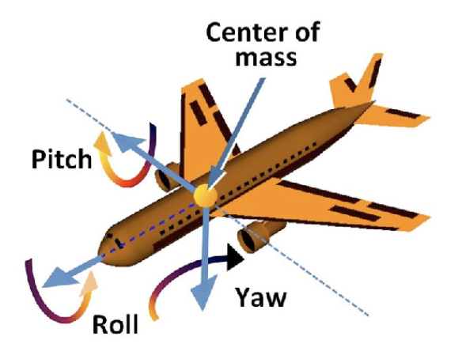
最后给出一个罗德里格斯旋转公式(Rodrigues' rotation formula)，它定义了一个表示沿任意轴 \(\mathbf{n}\) 旋转 \(\alpha\) 角的矩阵：
注：推导过程可参见这份帖子。
- \(\mathbf{n}\) 是一个单位向量，如果不是的话需要先做归一化处理
- 轴 \(\mathbf{n}\) 默认过原点，所以在沿不过原点的轴旋转的情况下，需要先将轴平移到可以穿过原点的位置，然后旋转图形，最后平移回去
- 四元数(quanternion)：可计算旋转的差值，具体原理不展开介绍
Viewing Transformations
View/Camera Transformations
引入
什么是视图转换(view transformations)（又叫相机转换(camera transformations)）呢？我们可以用摄影类比：
- 寻找好地方，安排好人 -> 模型变换
- 寻找放置相机的好角度 -> 视图变换
- 茄子！-> 投影变换
在执行视图变换前，先要定义相机：

- 位置 \(\vec{e}\)
- 注视方向(look-at/gaze direction) \(\hat{g}\)
- 向上方向(up direction) \(\hat{t}\)（假定和注视方向垂直）
一个关键发现是，如果相机和所有物体一起运动（即相对位置保持不变），那么得到的照片会是相同的。

在坐标系中，我们总是将相机放在原点位置上，向上方向同 y 轴方向，而注视方向和 z 轴方向相反。之所以这么放，是因为可以简化操作，但也引入了一些问题，稍后会做分析。
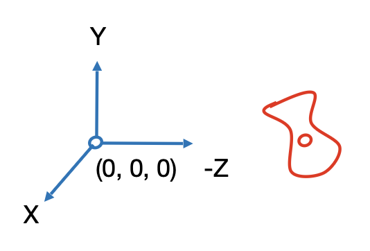

我们用矩阵 \(M_{view}\) 表示对相机的变换。\(M_{view}\) 要做的事情可分解为以下步骤：
- 将 \(\vec{e}\) 移到原点
- 把 \(\hat{g}\) 旋转至 -Z
- 把 \(\hat{t}\) 旋转至 Y
- 把 \((\hat{g} \times \hat{t})\) 旋转至 X
步骤有些多，看起来有些复杂。不过本质上也就涉及到平移和旋转变换，所以令 \(M_{view} = R_{view} T_{view}\)
-
将 \(\vec{e}\) 移到原点
\[ T_{view} = \begin{bmatrix}1 & 0 & 0 & -x_e \\ 0 & 1 & 0 & -y_e \\ 0 & 0 & 1 & -z_e \\ 0 & 0 & 0 & 1\end{bmatrix} \] -
三个旋转：\(\hat{g}\) -> -Z，\(\hat{t}\) -> Y，\((\hat{g} \times \hat{t})\) -> X
-
考虑逆向旋转：\((\hat{g} \times \hat{t})\) <- X，\(\hat{t}\) <- Y，-\(\hat{g}\) <- Z。根据前面所学，这些旋转操作可用
\[ R_{view}^{-1} = \begin{bmatrix}x_{\hat{g} \times \hat{t}} & x_t & x_{-g} & 0 \\ y_{\hat{g} \times \hat{t}} & y_t & y_{-g} & 0 \\ z_{\hat{g} \times \hat{t}} & z_t & z_{-g} & 0 \\ 0 & 0 & 0 & 1\end{bmatrix} \Rightarrow R_{view} = \begin{bmatrix}x_{\hat{g} \times \hat{t}} & y_{\hat{g} \times \hat{t}} & z_{\hat{g} \times \hat{t}} & 0 \\ x_t & y_t & z_t & 0 \\ x_{-g} & y_{-g} & z_{-g} & 0 \\ 0 & 0 & 0 & 1\end{bmatrix} \]这一步成立的原因是旋转矩阵是正交矩阵，而正交矩阵的逆 = 正交矩阵的转置，所以只需颠倒行列就行了。
-
之所以要介绍视图变换，是为后面的投影变换做准备。
Projection Transformations
CG 中的投影(projection)本质上就是一个 3D 到 2D 的过程。投影变换分为以下两类：
- 正射投影(orthographic projection)：常用于工程制图，无近大远小的现象
- 透视投影(perspective projection)：近大远小；延伸立方体上的所有边，发现一些直线会汇聚于一点（学过素描的都知道）
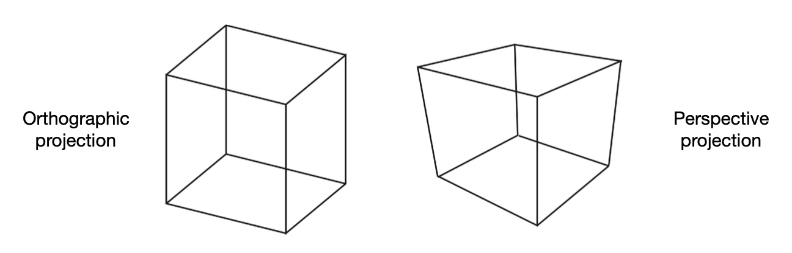
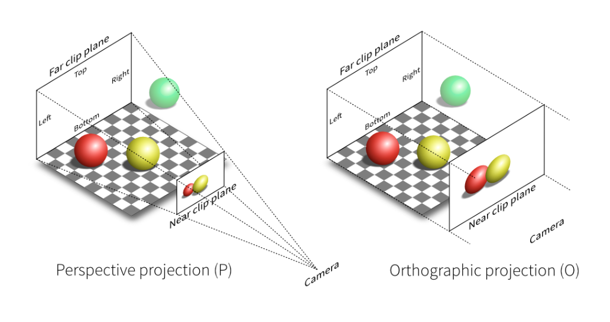
Orthographic Projection
可以这么理解正射投影的过程：
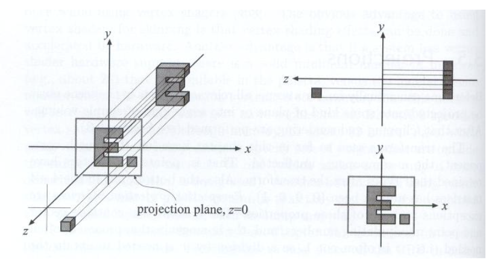
- 相机的摆放如前所述（放在原点，注视方向对着 -Z，向上方向对着 Y）
- 移除 Z 坐标
- 将结果矩形平移并缩放至 \([-1, 1]^2\) 上
通常，我们都会将坐标系中的长方体(cuboid) \([l, r] \times [b, t] \times [f, n]\) 映射到正则立方体(canonical cube) \([-1, 1]^3\) 上（又称归一化设备坐标(normalized device coordinates, NDC)）。
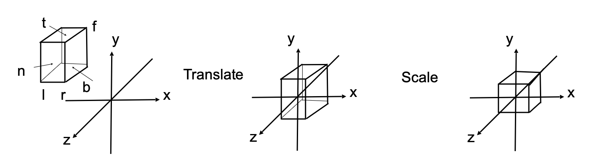
所以实际上的正射投影顺序和一开始的介绍有所区别：
- 先将长方体的中心平移到原点位置上
- 然后将其缩放至正则立方体
对应的转换矩阵如下：
注
- 由于规定相机朝向 -Z，因此图形的距离远近就显得不是很直观
- 这也正是一些图形学 API 采用左手坐标系的原因
Perspective Projection
- 透视投影在 CG，艺术和视觉系统等领域更为常见
- 有近大远小的现象
- 几何上平行的线在透视投影中是不平行的，它们在远处会汇聚成一点
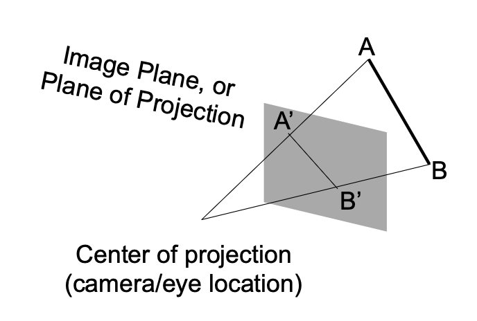
在继续介绍如何做透视投影前，先来回顾一下齐次坐标的概念。
- \((x, y, z, 1), (kx, ky, kz, k \ne 0), (zx, zy, z^2, z \ne 0)\) 都表示 3D 空间中相同的点 \((x, y, z)\)，比如 \((1, 0, 0, 1), (2, 0, 0, 2)\) 表示的都是点 \((1, 0, 0)\)
- 虽然简单，但有用
透视投影的过程分为：
- 先将视锥(frustum)“挤压(squish)”成一个长方体（n -> n, f -> f）（\(M_{persp \rightarrow ortho}\)）
- 近平面不变，远平面向内挤压，但中点不动
- 然后做正射投影（\(M_{ortho}\)，前面已给出）
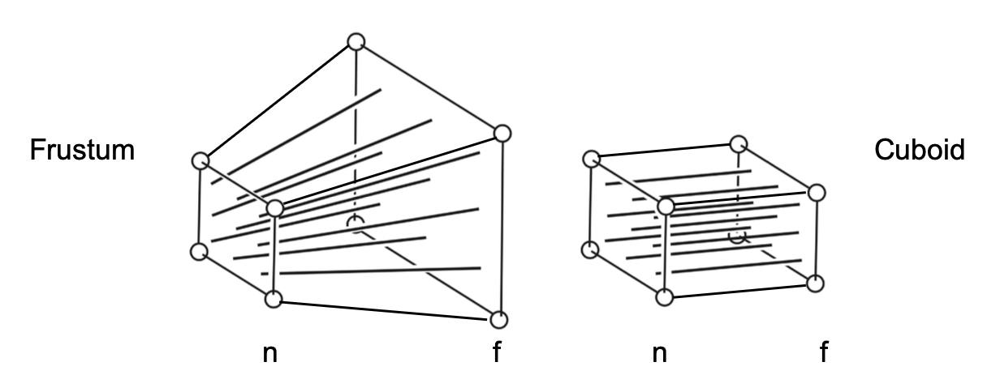
用矩阵表示为：\(M_{persp} = M_{ortho} M_{persp \rightarrow ortho}\)
要找出第一步的转换，关键思路在于寻找变换后的点 \((x', y', z')\) 和原来的点 \((x, y, z)\) 之间的关系

根据相似三角形的性质，\(y' = \dfrac{n}{z} y, x' = \dfrac{n}{z} x\)。用齐次坐标表示如下：
那么“挤压”（透视 -> 正交）投影所做的就是：
根据现有的信息，我们其实已经能推断出矩阵 \(M_{persp \rightarrow ortho}\) 内的很多元素了：
接下来的目标就是搞清矩阵中第三行的元素，它们和 \(z'\) 相关。观察发现：投影后，
- 近平面上的任何点都不会发生变化
- 远平面上的 z 坐标不会发生变化
基于第一点发现，可以得到以下等式：
所以第三行元素的形式一定为 \(\begin{pmatrix}0 & 0 & A & B\end{pmatrix}\)，即：
其中 \(n^2\) 和 \(x, y\) 无任何关系。这样就可以得到：\(An + B = n^2 \quad (1)\)。
再根据第二点发现，又能得到：
从而 \(Af + B = f^2 \quad (2)\)。将 (1)(2) 联立，解得 \(\begin{cases}A = n + f \\ B = -nf\end{cases}\)。
现在 \(M_{persp \rightarrow ortho}\) 内的所有元素均是已知的了。接下来就可以继续做正射投影了。
现在回过头来看另一种常见的定义视锥的方式——除了用 \(l, r, b, t, n, f\) 这六个值表示外，还有：
- 垂直可视角度(vertical field-of-view, fovY)
- 摄影的广角就是 fovY 较大
- 宽高比(aspect ratio)
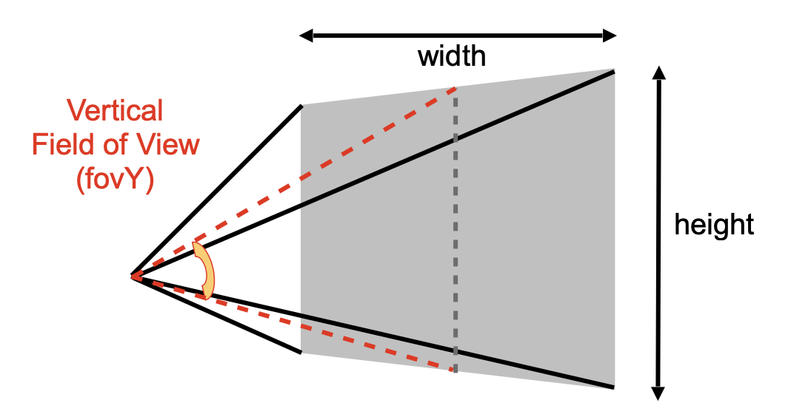
注
- 这里假设是对称的，即 \(l = -r, b = -t\)
- 知道这两者就可以推出水平可视角度（用于游戏）
将 fovY 和宽高比转换至 \(l, r, b, t\) 是很轻松的事：
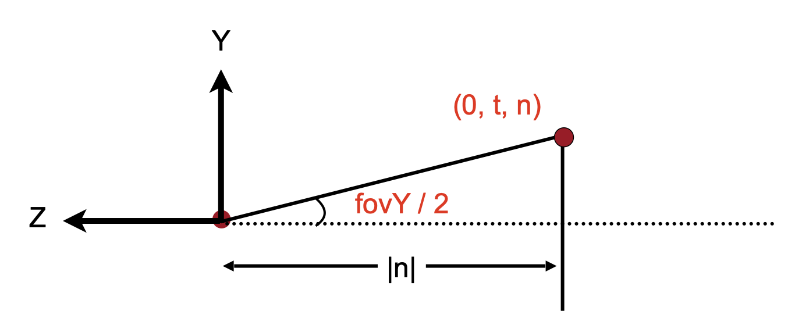
- \(\tan \dfrac{\text{fovY}}{2} = \dfrac{t}{|n|}\)
- \(\text{aspect} = \dfrac{r}{t}\)
评论区